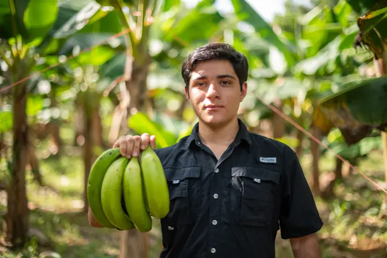
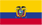

Presidente · Gerente General
Mateo Blacio

EcuadorFundador y motor de Platanera Oro Verde. Su pasión por la tierra y la comunidad ha sido el pilar para construir una empresa comprometida con la calidad, la sostenibilidad y el impacto positivo en la región.